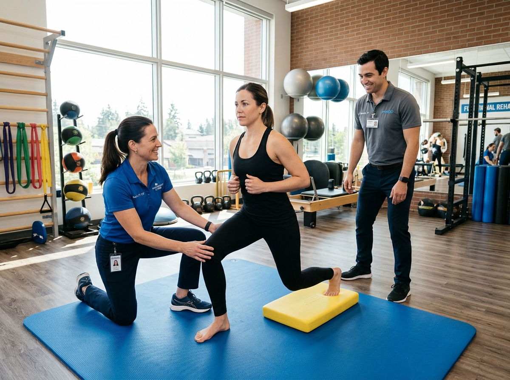

From a Dedicated Practice to a Regional Rehabilitation Leader
RestoraCare was founded with a singular conviction: healing should never be rushed. While mainstream physiotherapy often relies on fast 15-minute consultations and passive heat packs, our founders set out to build an intentional clinic dedicated to 1-on-1 hands-on care, deep diagnostic accuracy, and patient empowerment.
Today, our multi-specialty facility spans orthopedic rehabilitation, neuro-reconditioning, athletic recovery, and postoperative restore therapy, recognized across the region for superior clinical outcomes.
2012 — Foundation & Manual Care
Opened our flagship manual therapy clinic with 3 treatment suites and full private evaluation rooms.
2017 — Advanced Biomechanics Suite
Integrated computerized gait analysis, 3D spine tracking, and sports injury reconditioning labs.
2024 — Modern Neuro & Digital Portal
Expanded to 24 licensed therapists, advanced robotic-assist gait devices, and the RestoraCare Patient Portal.